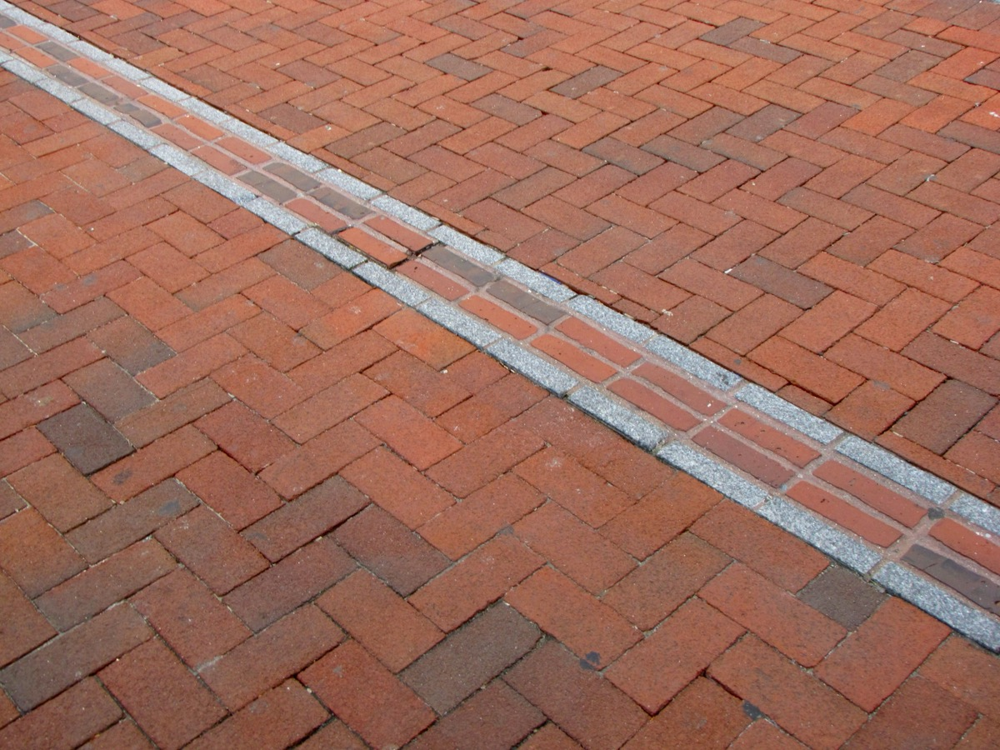
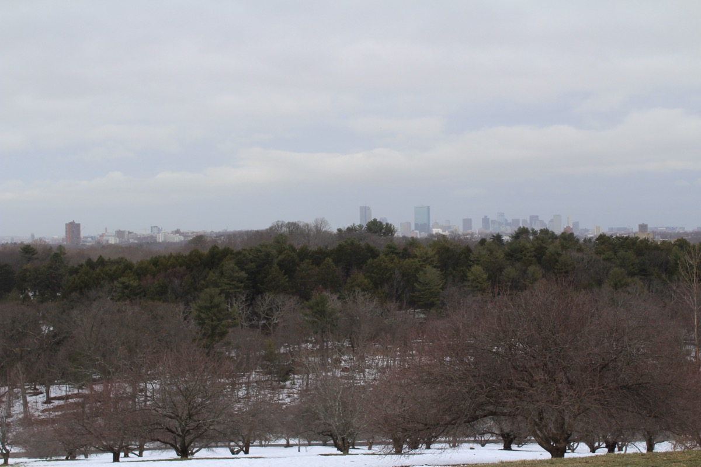
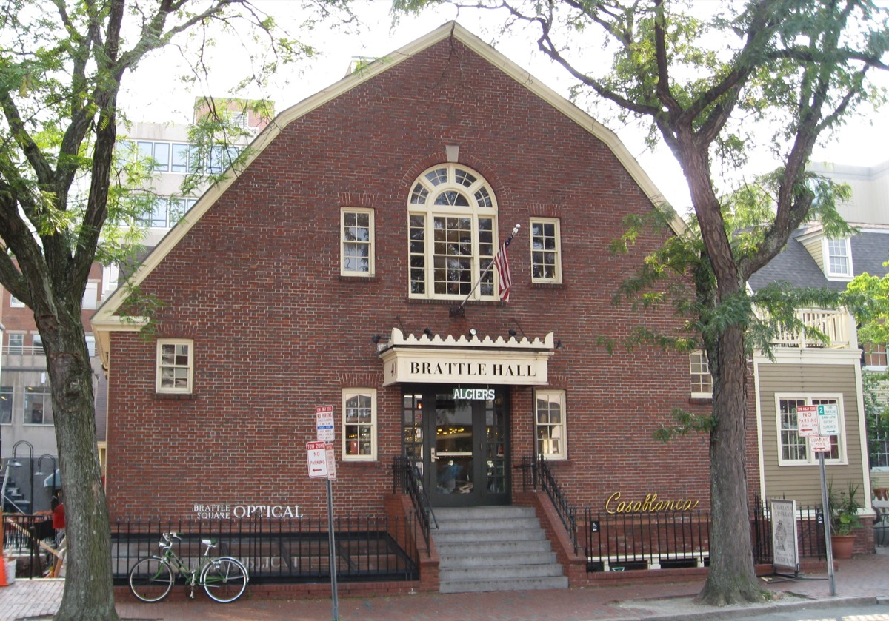
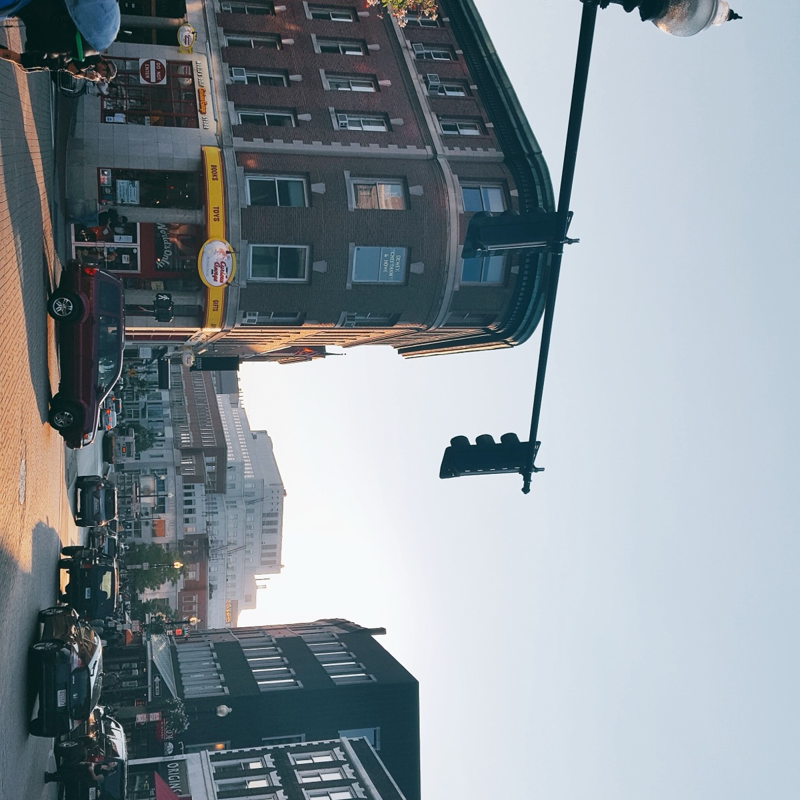
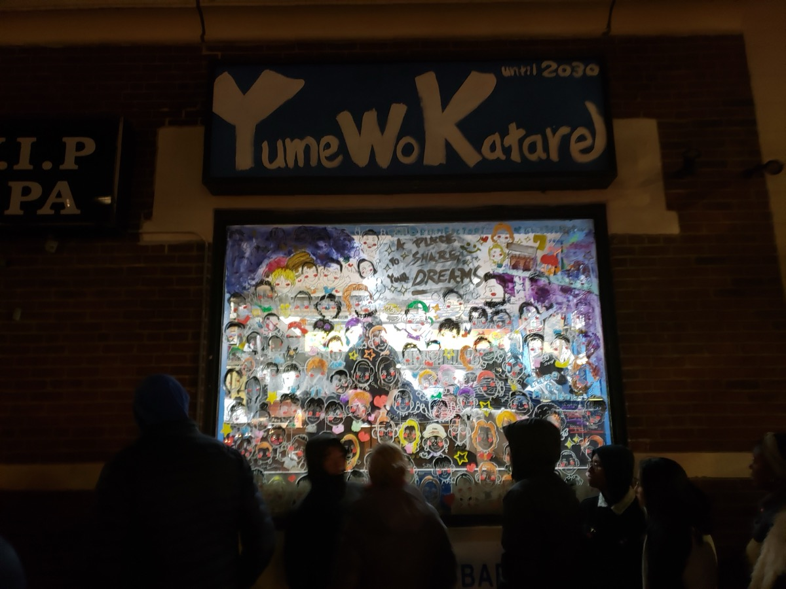
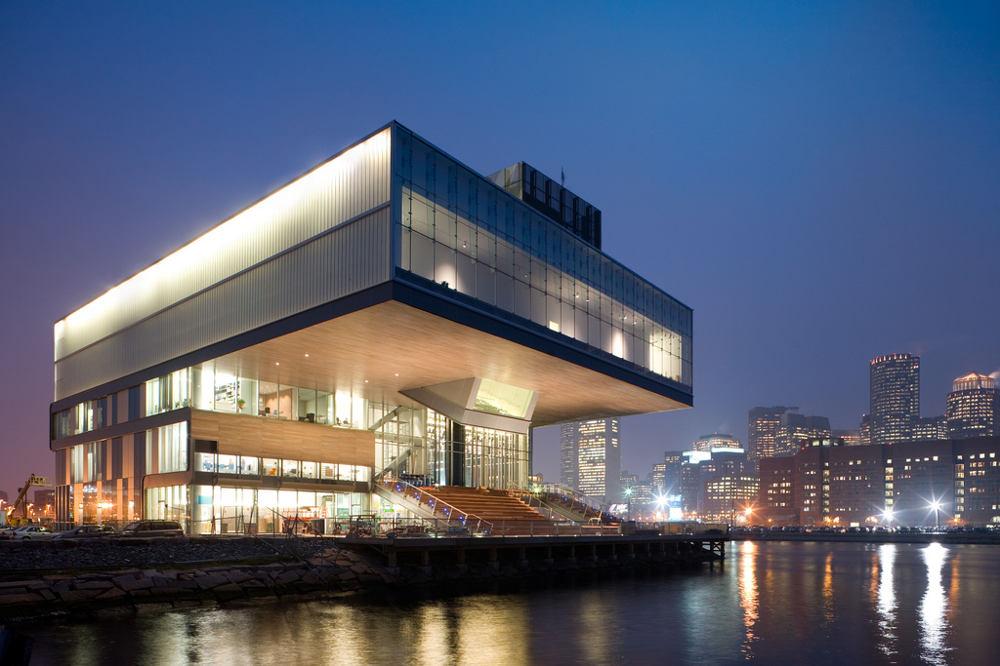
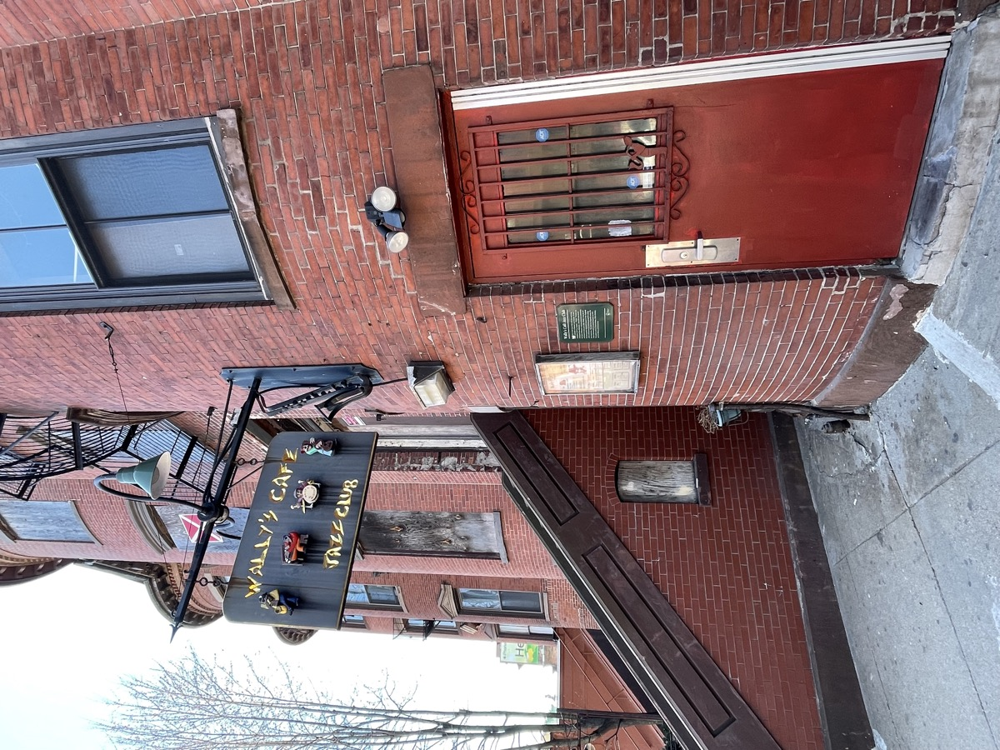
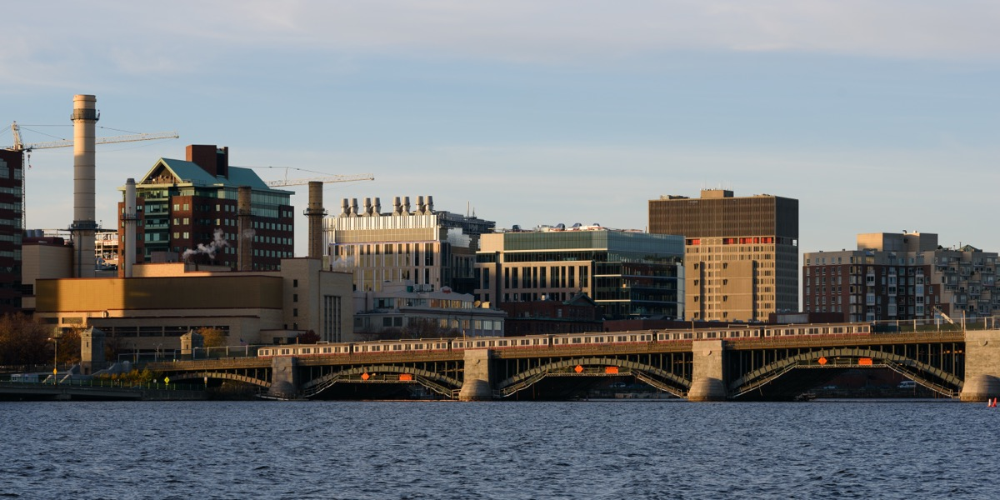
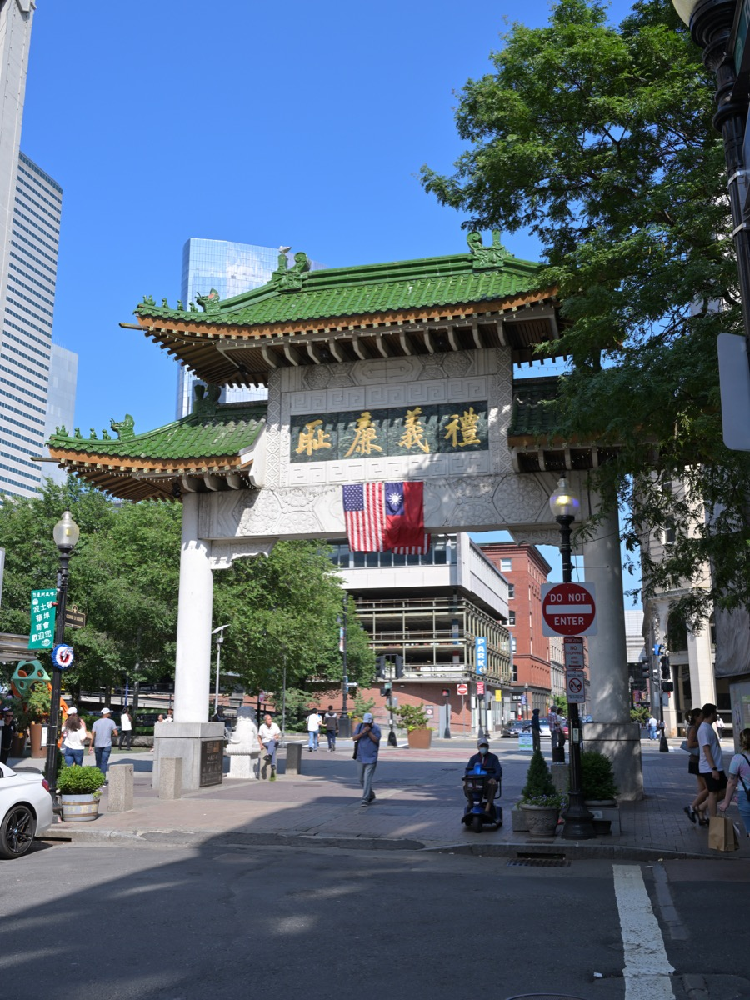

Boston is one of the easiest cities in the United States to enjoy alone. It is small enough to walk across in an afternoon, the subway runs until after midnight, and roughly a quarter of a million students live in the metro area, so nobody looks twice at a person eating or walking by themselves. This guide covers 25 things to do alone, organized by how you might spend a day: daytime activities, where to eat and drink solo, ways to meet people, what to do at night, and a one-day itinerary.
The short answer
Five that never feel awkward
Solo-tested, no second person required.
01 · Daytime
Things to do alone in Boston during the day
Activities that are genuinely better solo: places that reward going at your own pace.
Read or work in Bates Hall
700 Boylston StT Copley (Green)Free

A 218-foot room with a barrel-vaulted ceiling and green-shaded lamps. Quiet, beautiful, and full of other people alone.
Walk the Freedom Trail at your own pace
Boston Common, 139 Tremont StT Park Street (Red, Green)2.5 mi, 2–3 hrs

Better alone than with a tour group; linger where you want and skip what you don't. Solo walkers average 2 hours 40 minutes.
Isabella Stewart Gardner Museum on a weekday morning
25 Evans Way, FenwayT Museum of Fine Arts (Green E)$22
A Venetian palace around a courtyard garden, arranged exactly as its founder left it. Rewards standing still; weekday mornings are nearly empty.
Walk the Harborwalk from the Seaport to the North End
ICA, 25 Harbor Shore DrT Courthouse (Silver)~2 mi, 45 min
The best solo walk in the city, best in the hour before sunset. Ends in the best neighborhood for a solo dinner.
Get lost in the Arnold Arboretum
125 Arborway, Jamaica PlainT Forest Hills (Orange)Dawn to dusk, free

281 free acres, big enough to wander two hours without repeating a path. Peters Hill has a skyline view.
A weekday matinee at the Coolidge or the Brattle
290 Harvard St / 40 Brattle StT Coolidge Corner / Harvard (Green C)$10–14

An art deco theater and a repertory double-feature house. A 2pm weekday screening alone is underrated.
Browse Harvard Square's bookstores
Harvard Book Store, 1256 Mass AveT Harvard (Red)Open until 11pm

More independent bookstores within a few blocks than almost anywhere in the US. Browse an hour, sit on the Widener steps.
02 · Eating & drinking alone
Where to eat and drink alone in Boston
If a restaurant has a bar or a counter, sit at it. Service is faster and you are never "the table for one."
A dozen oysters at the bar
Neptune Oyster, 63 Salem StT Haymarket (Orange)$3–4 each
Nothing to share, no menu negotiation, a shucker to talk to. Row 34 and B&G Oysters are the other two on the list.
Lunch at a counter: Sam LaGrassa's or Galleria Umberto
44 Province St / 289 Hanover StWeekday lunch only
The city's best pastrami sandwich, and Sicilian slices sold until they run out around 1:30pm. Both counter-service and cash-friendly.
A cocktail at Drink, Fort Point
348 Congress St, basementT South Station (Red)~$16
No cocktail menu — you describe what you like and the bartender makes it. A conversation is built into ordering.
A ramen counter in Chinatown or Porter Square
Yume Wo Katare, 1923 Mass AveT Porter (Red)Under $12

A single communal counter: order one thing, eat it, announce a dream on the way out. Gene's in Chinatown is open late.
A café to work from
Render Coffee, 563 Columbus AveSouth End
Good WiFi and long-stay tolerance. Tatte is better for people-watching, Pavement the reliable chain.
One beer at the Bell in Hand or the Warren Tavern
45 Union St / 2 Pleasant StBoth on the Freedom Trail
Since 1795 and 1780 respectively, both claim to be the oldest tavern in America. A single drinker at the bar is normal.
03 · Meeting people
How to meet people in Boston when you're on your own
Activities where talking to strangers is the point, so showing up solo is expected rather than awkward.
Join a trivia team as a solo player
The Burren, 247 Elm St, SomervilleMost weeknights, free
Arrive, tell the host you're solo, and you'll be placed on a team. The single most reliable way to meet people alone.
Show up to a run club
November Project, Harvard StadiumWednesdays 6:30am, free
Free, weekly, built for newcomers since 2011. Conversation starts on its own around mile two.
Free Thursday night at the ICA
25 Harbor Shore DrT Courthouse (Silver)Thu 5–9pm, free

The closest thing Boston has to a weekly social night for people in their twenties and thirties. Going alone is normal.
Pickup sports on the Common and the Esplanade
Boston Common ball fieldsSummer evenings
Usually a pickup soccer, basketball or volleyball game going. Stand near the edge and look interested.
Language exchanges and meetup groups
Cafés in Harvard Square, Kendall, Back BayWeekly, usually free
Explicitly for meeting strangers, so arriving alone is the norm. Board game nights at Knight Moves work the same way.
The longer answer is in how to make friends in Boston.
04 · Solo at night
Things to do alone in Boston at night
Live jazz at Wally's Café
427 Mass Ave, South EndT Mass Ave (Orange)Nightly, no cover

A jazz club since 1947, one of the oldest continuously running in the country. One of the few places in Boston where alone at 11pm looks like a regular.
Longfellow Bridge after dark
Charles/MGH to Kendall SquareT Charles/MGH (Red)Public, well lit

The Back Bay skyline reflected in the river, Red Line trains beside you, always other people on the bridge. ~15 min round trip.
Late-night noodles in Chinatown
Gene's Flatbread, 86 Bedford StT Chinatown (Orange)Open past midnight

Counter seats, full of people who also didn't plan dinner. No small talk required.
The Seaport waterfront at midnight
Fan Pier Park and the HarborwalkT Courthouse (Silver)Always open
Empty, lit and safe, with the full Downtown skyline across the water. The best solo view of the city at night.
A show at the Sinclair or Brighton Music Hall
52 Church St / 158 Brighton AveTickets $20–35
General admission, standing, dark — the easiest concerts to attend alone. Both book touring indie acts most nights.
More in things to do in Boston at night.
05
A one-day solo itinerary for Boston
About six miles of walking with two T rides, under $40 including lunch and a drink.
| Time | What | Where |
|---|---|---|
| 8:30am | Coffee and a pastry, then start the Freedom Trail | Boston Common, Park Street |
| 9:00am | Freedom Trail through Downtown to the North End | Granary, Old State House, Faneuil Hall |
| 11:30am | Old North Church and Copp's Hill; early lunch before it sells out | North End |
| 1:00pm | Walk the Harborwalk south to the Seaport | Christopher Columbus Park to the ICA |
| 2:00pm | ICA (free if Thursday), or the Boston Public Library | Seaport or Copley |
| 4:30pm | Read or rest in Bates Hall, or the Public Garden | Back Bay |
| 6:00pm | Sunset on the Esplanade | Hatch Shell dock |
| 7:30pm | Oysters and a drink at the bar | Neptune, Row 34 or B&G |
| 9:30pm | Trivia, Wally's, or the Longfellow Bridge walk home | Your call |
06
Is Boston safe to explore alone? Practical tips
Boston is one of the safer large cities in the US for solo visitors. The central areas, including Back Bay, Beacon Hill, Downtown, the North End, the Seaport, Cambridge and Somerville, are comfortable to walk alone at night. Use ordinary city judgment: stay on main streets after 1am, and note that the Common and the Esplanade get quiet late.
The T stops running around 12:30am, so check the MBTA app if you're out late. Many North End restaurants are cash only; the MFA, Gardner and ICA all have lockers for bags; and Boston's weather changes fast, so a layer in your bag is a good idea in every season.
FAQ
Things to do alone in Boston: common questions
Is Boston a good city to visit alone?
Yes. Boston is compact and walkable, has reliable transit, is safe in the central neighborhoods at night, and has a large population of students and young professionals. Being out alone is normal here.
Is it weird to eat alone in Boston?
No. Most good restaurants have bar seating, and oyster bars, ramen counters, lunch counters and cafés are built for solo diners. Sitting at the bar is the easiest way to eat alone anywhere in the city.
Is Boston safe to walk alone at night?
The central neighborhoods are busy and well lit late. Use normal judgment, stay on main streets after 1am, and note that the T stops around 12:30am.
How do I meet people in Boston if I'm alone?
Go where talking to strangers is the point: trivia nights, run clubs, pickup sports, free museum nights at the ICA, and language exchange or board game nights where arriving alone is expected.
What is there to do alone in Boston on a rainy day?
The Boston Public Library, the Gardner, the MFA, the ICA, a matinee at the Coolidge, the bookstores of Harvard Square, and a long lunch at a counter.
How many days do you need in Boston alone?
Two full days covers the essentials: the Freedom Trail, one or two museums, the waterfront and a couple of neighborhoods. Three days lets you add Cambridge and a day trip.